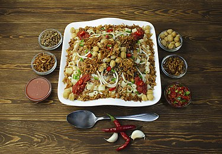
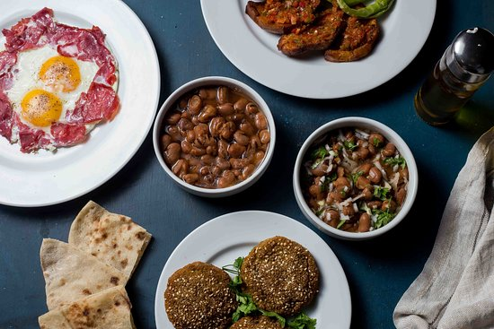
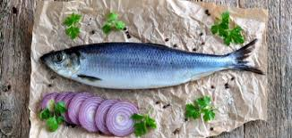

most famous food in Egypt
Koshary
Koshary, kushari or koshari (Egyptian Arabic: كشرى [koʃaeɾi]) is Egypt's national dish and a widely popular street food. It is a traditional Egyptian staple, mixing pasta, Egyptian fried rice, vermicelli and brown lentils, and topped with chickpeas, a garlicky tomato sauce, garlic vinegar, and crispy fried onions. Sprinklings of garlic vinegar and hot sauce are optional.
falafel
 Falafel: A Humble Vegetarian Staple in Middle Eastern Cuisine
The falafel, a modest yet widely cherished fixture in Middle Eastern cuisine, is more than just a delicious, golden-fried ball or patty. This traditional dish, which has won over palates across the globe, encapsulates a rich and vibrant narrative of cultural history and culinary adaptation, reflecting the culinary acumen of the Middle East.
falafel's history
The story of falafel unfolds amidst debate and speculation. Culinary historians and anthropologists often disagree about its precise origins, but a substantial amount of evidence attributes the genesis of modern falafel to Egypt. It is believed that Copts, an Egyptian Christian community, initially crafted the dish using fava beans, labeling it 'ta'amiya'. This dish served as a meat substitute during the Christian fasting period known as Lent.From its early beginnings in Egypt, falafel began to migrate, propelled by trade and cultural exchanges, weaving its way across the Middle East and the Mediterranean. As it traversed these regions, it underwent several transformations, evolving to accommodate the tastes and available resources of each new host culture.
In regions like Lebanon, Syria, and Palestine, where chickpeas were more abundant, they replaced fava beans with chickpeas as the primary falafel ingredient. Yemen introduced a twist to the traditional falafel by incorporating hot peppers, adding a spicy dimension. Lebanese cooks imparted their affinity for sesame seeds, enhancing the falafel with a unique crunch and flavor profile. As falafel reached the Levant, it had already experienced a range of transformations. The recipe was refined and tailored to complement the local palate, and the falafel morphed into its widely recognized round or patty shape, straying from its original Egyptian disc-like form. Falafel's evolution did not halt in the Levant. As populations from the Middle East began to migrate across the globe in the 19th and 20th centuries, they took their cuisine along, including the esteemed falafel. This simple dish, encased in a soft pita bread, complemented by fresh vegetables, and enhanced with a drizzle of tahini sauce, swiftly rose to global popularity. Falafel stands sprung up in cities across Europe and America, providing an economical and satisfying meal option. The dish gained particular favor among students and workers, reflecting its role back in its native region. With its global spread, falafel became a gastronomic emblem of Middle Eastern cuisine, representing the culinary identity of countless individuals. Despite the region's complex geopolitical fabric, falafel stands as a unifying cultural factor. From Cairo to Beirut, Jerusalem to Damascus, falafel constitutes a shared culinary heritage that bridges borders. Presently, falafel has achieved universal acclaim. With the escalating popularity of vegetarian and vegan diets and the global street food trend, this Middle Eastern staple has found its place in countless menus worldwide. Despite its unassuming composition, falafel carries immense significance in global cuisine as a token of Middle Eastern culinary history and evolution.
fool
the fool is from the famous food in Egypt and it is widespread popular areas (Bottom layers ) because of it's low cost
Clupea
Clupea is genus of planktivorous bony fish belonging to the family Clupeidae, commonly known as herrings. They are found in the shallow, temperate waters of the North Pacific and the North Atlantic oceans, including the Baltic Sea. Two main species of Clupea are currently recognized: the Atlantic herring (Clupea harengus) and the Pacific herring (Clupea pallasii), which have each been divided into subspecies. Herrings are forage fish moving in vast schools, coming in spring to the shores of Europe and America, where they form important commercial fisheries.